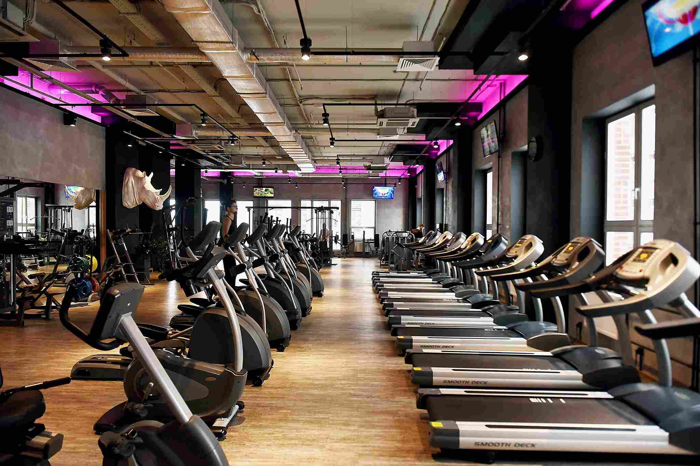

SAÚDE E BEM ESTAR

Manter-se ativo e cuidar da saúde física são aspectos fundamentais para uma vida longa e saudável. O conceito de fitness vai além de apenas se exercitar;
é uma filosofia de vida que engloba bem-estar físico, mental e emocional.
Benefícios do Exercício Físico:
Saúde Cardíaca:
Atividades físicas regulares, como corrida, natação ou ciclismo, ajudam a fortalecer o coração, melhorando a circulação sanguínea e reduzindo o risco de doenças
cardiovasculares.
Controle de Peso:
Exercícios ajudam a queimar calorias, contribuindo para a manutenção de um peso saudável e prevenindo a obesidade, que é um fator de risco para várias doenças
crônicas.
Melhoria do Humor:
A prática de atividades físicas libera endorfinas, conhecidas como hormônios da felicidade, que ajudam a reduzir o estresse, ansiedade e sintomas de depressão.
Fortalecimento Muscular e Ósseo:
Exercícios de resistência, como musculação, são essenciais para fortalecer músculos e ossos, prevenindo a osteoporose e outras condições relacionadas à idade.
Qualidade do Sono:
Pessoas que se exercitam regularmente tendem a ter um sono de melhor qualidade, o que é crucial para a recuperação e regeneração do corpo.
Bem-Estar Geral
O bem-estar não se limita apenas ao aspecto físico; ele abrange uma harmonia entre corpo e mente. Aqui estão alguns pontos sobre como o exercício contribui para
o bem-estar geral:
Redução do Estresse:
A prática regular de exercícios físicos ajuda a diminuir os níveis de cortisol, o hormônio do estresse.
Aumento da Autoestima:
Sentir-se bem fisicamente melhora a autoimagem e a confiança, impactando positivamente em todas as áreas da vida.
Interação Social:
Participar de grupos de exercícios ou esportes coletivos proporciona oportunidades de socialização e desenvolvimento de amizades, importantes para a saúde mental.
Dicas para Iniciar uma Rotina de Exercícios
Comece Devagar:
Se você é iniciante, comece com atividades leves e vá aumentando a intensidade gradualmente.
Escolha Atividades Prazerosas:
Opte por exercícios que você goste, isso tornará a prática mais agradável e sustentável.
Estabeleça Metas Realistas:
Defina objetivos alcançáveis e celebre cada conquista para se manter motivado.
Busque Orientação Profissional:
Um educador físico pode ajudar a criar um plano de treino adequado às suas necessidades e limitações.
Seja Consistente:
A regularidade é a chave para obter os benefícios do exercício. Tente incorporar atividades físicas na sua rotina diária.

A importância de fazer exercícios vai além da estética; é um investimento na saúde e no bem-estar a longo prazo. Portanto, mova-se e cuide de si mesmo hoje para
um amanhã mais saudável e feliz.